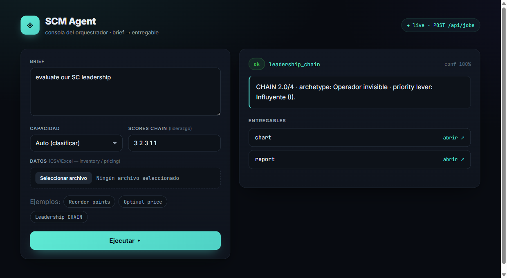

Case Study — AI Agent
Building an AI Agent for Supply-Chain Decisions
Why I didn't stop at spreadsheets: a QA-gated agent that classifies a brief, runs the right model, and never leaves you with a dead end.

Problem
Most inventory analysis lives in one-off spreadsheets: fragile, unauditable, and slow to rerun the moment the data changes. Every new question means rebuilding the same formulas from scratch, and nothing stops a bad input from producing a confident-looking wrong answer.
Method
I built an orchestrator agent around the exact same pipeline for every capability: a plain-language brief is classified to intent, routed to one of 35+ registered tools, run, validated against a QA gate, and delivered as a finished Excel workbook, report, and chart. If QA fails, nothing ships — that check lives in one place, not scattered across each tool.
What I built
Two safety guarantees sit on top of the pipeline. Never-unprotected: every consequential result is either executed outright, or hands back ranked options, a prepared handoff (a pre-filled PO or count sheet), or an escalation with an SLA — never a dead end. Safe-staging writeback: any change to a client's live system of record (e.g. an Odoo ERP or an Excel workbook) is first staged as a dry-run changeset, classified by risk tier, gated behind a time-boxed approval, and applied idempotently with a working rollback.
Result
Linchpin is open source — browse the orchestrator, the full tool registry, and the test suite on GitHub.